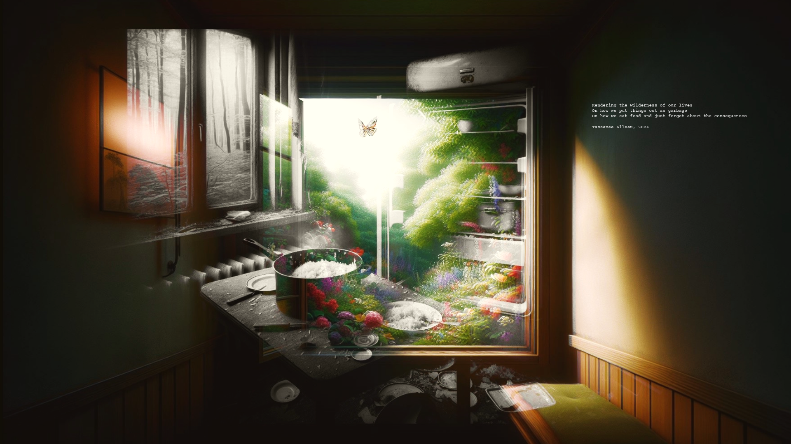

The Machine
Poèmes de l’artificialité à la nature manquée
Projet d’écriture inspirée par les photomontages numériques, produits à la fois par l’humain et par la machine, un entre deux qui ne renvoie finalement qu’à l’humain seul, dans sa capacité à produire et reproduire la “nature” et l’”artificiel”, dans un cycle constant mais chaotique. Au travers de ces photomontages, l’on ne sait où se situe le réel, l’imaginaire, la lumière naturelle ou artificielle, la nature du dedans et du dehors.
